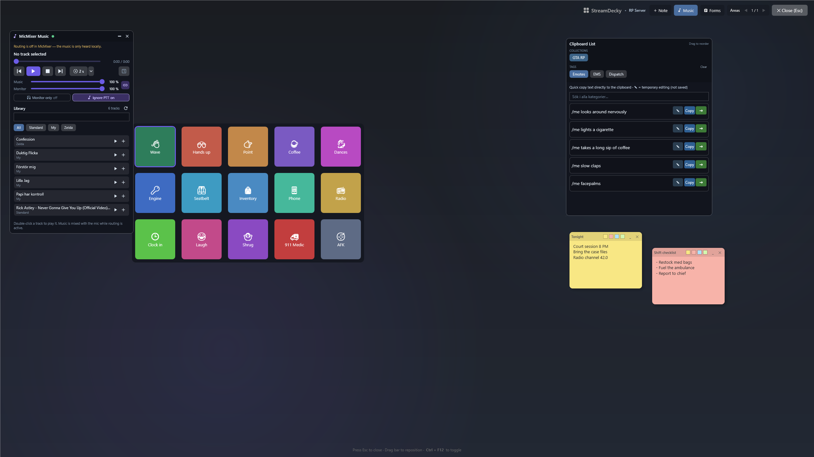
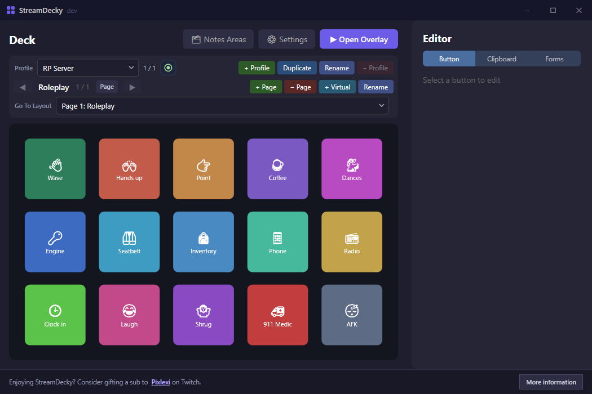

StreamDecky is a free, open-source Windows app. Press a global hotkey (or a gamepad combo) and a fullscreen overlay appears above whatever you're playing: a grid of configurable buttons, ready-made chat lines, fill-in forms, and sticky notes. When you click something, StreamDecky gives focus back to the game and sends the keystrokes or text there. No Stream Deck hardware involved; it's all software.
Download the versioned StreamDecky-<version>-win-x64.zip from the
latest release.
Windows 10/11. Self-contained, no .NET install needed. Runs without admin rights. Apache-2.0.

On roleplay servers like FiveM, and in any other game with a chat box, half of playing
is typing /me lines and commands
quickly, mid-scene. StreamDecky keeps them as clipboard items, organized in categories
and collections and searchable from the overlay. One click copies the line. Or let an
action pipeline deliver it whole: press T to open the chat, paste
/me checks pulse and breathing, press Enter. Need a one-off variation?
Edit the line inline in the overlay without touching the saved version.
Buttons can press keys, type or paste text, and chain several steps with delays:
open chat → /e dance → Enter is one button. Buttons can also jump to other
pages: a Dances button can open a hidden page full of dance emotes with a back
button (a “virtual layout”), so the main deck stays clean. Colors, emoji, and images
keep it readable in the middle of a scene.
Radio channels, court times, license plates, names you keep forgetting: pin them as sticky notes on the overlay. Notes live in their own pages, independent of the button layouts.
Forms are designed once in the editor and filled in from the overlay: text fields,
choice fields that prefill editable text, auto-incrementing counters (invoice numbers,
case IDs), and {date}/{time} tokens. Fields can suggest what
you typed last time. Submit to the clipboard, or straight into the game through the same
kind of action pipeline. Works for dispatch reports and in-character invoices, and just
as well for real-world canned replies and repetitive data entry, since the input goes to
whatever window you were using before the overlay opened.
If MicMixer is running, the overlay's music widget remote-controls its player: library search, queue, seek, volumes, delayed start. No configuration needed; it connects automatically over a local named pipe.

Ctrl-drag to copy, Ctrl+C/Ctrl+V whole button configurations.%LOCALAPPDATA%\StreamDecky.A to activate, LB/RB for pages.StreamDecky-<version>-win-x64.zip.StreamDecky.exe.The README covers the rest: all action types, forms in detail, data storage and recovery, and known limitations (for example, games with aggressive anti-cheat may ignore simulated input).